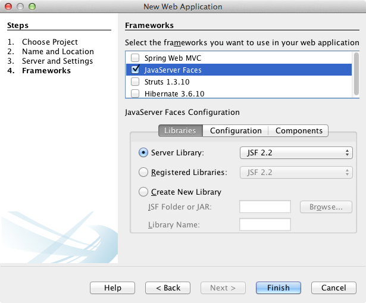
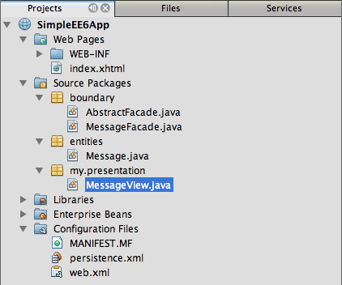
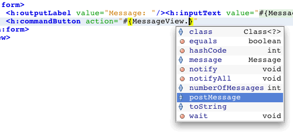
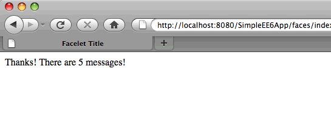

Apache NetBeans
Apache NetBeansLatest release
Начало работы с приложениями Java EE
| This tutorial needs a review. You can edit it in GitHub following these contribution guidelines. |
В этом документе содержится краткое описание некоторых возможностей, добавленных в спецификацию Java Enterprise Edition 6 (Java EE 6). В качестве иллюстрации новых возможностей в этом учебном курсе используется пример создания простого веб-приложения Java EE, содержащего фасад компонента сеанса без сохранения состояния EJB 3.1 для класса сущностей. Для создания класса сущностей и сеансного компонента в среде IDE используются мастеры. В созданном мастером коде используются запросы, определенные в интерфейсе Criteria API, который является частью JPA 2.x и входит в состав спецификации Java EE 6. Затем создается управляемый компонент с именем, имеющий доступ к фасаду сеанса и уровню представления, на котором используется инфраструктура вида Facelets, как указано в спецификации JSF 2.x.
Этот учебный курс основан на публикации в блоге + Простейший из возможных компонентов JSF 2 / EJB 3.1 / JPA - с развертыванием WAR+ (автор Адам Бьен (Adam Bien)). Дополнительные примеры по Java EE examples доступна в проекте Адама Бьена по Kenai + Шаблоны и испытанные приемы Java EE+ и в его книге "Шаблоны Java EE в реальном мире - обдумывая заново проверенные приемы", которая доступна на http://press.adam-bien.com.
Упражнения по темам руководства
Для работы с этим учебным курсом требуется следующее программное обеспечение и ресурсы.
| Программное обеспечение или материал | Требуемая версия |
|---|---|
Версия 7.2, 7.3, 7.4, 8.0, Java EE |
|
версия 7 или 8 |
|
GlassFish Server Open Source Edition 3.1.2.2 |
3.x, 4.x |
Предпосылки
Предполагается, что читатель обладает базовыми знаниями по следующим технологиям или опытом программирования с их использованием:
-
Программирование на Java
-
IDE NetBeans
Можно загрузить готовый проект в виде архива ZIP.
Создание проекта веб-приложения
В этом упражнении создается простое веб-приложение. При создании веб-приложения укажите в качестве целевого контейнера Java EE сервер GlassFish. Сервер GlassFish совместим с Java EE и включает в себя библиотеки JSF 2.x, необходимые для этого приложения.
В мастере создания проектов в качестве версии Java EE можно выбрать Java EE 6 Web или Java EE 7 Web. Java EE 6 Web и Java EE 7 Web являются упрощенными профилями Java EE 6, которые содержат подмножество полной платформы Java EE. Профили Java EE Web разработаны для веб-приложений, не требующих расширенных технологий Java EE, таких как поддержка удаленных интерфейсов, полная спецификация EJB 3.1 и API-интерфейс службы передачи сообщений Java (JMS).
Веб-профили поддерживают обработку транзакций и управление сохранением состояния, которые часто используются в корпоративных веб-приложениях. Профили Java EE Web можно использовать для веб-приложений, в которых применяются компоненты сеансов с локальным интерфейсом или без интерфейса. При использовании в приложении удаленного интерфейса необходим полный профиль Java EE.
-
Выберите 'Файл' > 'Создать проект' (Ctrl-Shift-N; ⌘-Shift-N в Mac) в главном меню.
-
Выберите "Веб-приложение" из категории "Java Web" и нажмите кнопку "Далее".
-
Введите SimpleEE6App в качестве имени проекта и укажите местоположение проекта.
-
Снимите флажок "Использовать отдельную папку", если он установлен. Нажмите кнопку "Далее". (В рамках этого руководства копирование библиотек проекта в отдельную папку нецелесообразно, поскольку совместное использование библиотек с другими пользователями или проектами не требуется.)
-
Выберите сервер GlassFish и укажите Java EE 6 или Java EE 7 в качестве версии Java EE. Нажмите кнопку "Далее".
-

Figure 1. Панель 'Сервер и настройки' в мастере создания проектов
-
Выберите в панели "Платформы" JavaServer Faces. Нажмите кнопку "Завершить".
По умолчанию при разработке веб-приложения Java EE, развертываемого на сервере GlassFish, в среде IDE будет выбрана библиотека JSF 2.x. Версия используемой по умолчанию библиотеки JSF зависит от версии, поставляемой в комплекте с сервером GlassFish. Библиотека JSF 2.x позволяет использовать Facelets в качестве языка страниц и обеспечивает поддержку JSF 1.2 и JSP.

Figure 2. Панель 'Платформы' мастера создания проектов
При нажатии кнопки "Завершить" проект будет создан в среде IDE, который откроется в окне "Проекты". В среде IDE автоматически создается и открывается в редакторе страница index.xhtml .
Создание класса сущностей и фасада сеанса
В этом разделе будет создан класс сущностей и фасад сеанса для класса сущностей. Класс сущностей – это простой старый объект Java (Plain Old Java Object, POJO), простой класс Java, идентифицированный аннотацией @Entity как сущность. Начиная со спецификации Java EE 5 классы сущностей можно использовать в качестве объектов с сохраняемым состоянием для представления таблиц в базе данных. Интерфейс Java Persistence API позволяет использовать сохранение состояния в веб-приложениях без необходимости создания модуля EJB.
Фасад сеанса для класса сущностей в этом приложении является сеансным компонентом без сохранения состояния. Архитектура Enterprise JavaBean (EJB) 3.1, представленная как часть спецификации Java EE 6, позволяет создавать компоненты сеансов без бизнес-интерфейсов, которые требовались в EJB 3.0. Спецификация Java EE 6 также допускает упаковку компонентов EJB напрямую в архив WAR. Благодаря этому упрощается разработка небольших приложений за счет исключения необходимости создания отдельных модулей EJB, которые запаковываются как архив JAR в архив EAR. Однако для больших приложений J2EE, которые распределяются на разных машинах, остается необходимость в создании архивов EAR для отделения бизнес-логики от уровня представления.
Подробные сведения об использовании EJB 3.1 в среде IDE приведены в учебном курсе Создание приложения J2EE с помощью EJB 3.1.
Дополнительные сведения о классах сущностей см. в главе Введение в API-интерфейс сохранения состояния Java в Учебном курсе по Java EE 7.
Дополнительные сведения о компонентах сеансов см. в главе Что такое компонент сеанса? в Руководстве по Java EE 7.
Создание класса сущности
В этом упражнении с помощью мастера создания класса сущностей будет создан простой класс сущностей с сохраняемым состоянием. Также будет описан мастер создания блока сохранения состояния, которая определяет источник данных и диспетчер сущностей, используемые в приложении. Будет добавлено одно поле в класс для представления данных в таблице и созданы методы получения и установки для нового поля.
Класс сущностей должен иметь первичный ключ. При создании класса сущностей с помощью мастера в среде IDE по умолчанию создается поле id и создается аннотация @Id для объявления этого поля в качестве первичного ключа. Также в среде IDE добавляется аннотация @GeneratedValue и указывается стратегия создания ключей для первичного поля id.
Использование в проекте интерфейса Java Persistence значительно упрощает разработку приложения в силу отсутствия необходимости настройки дескрипторов развертывания для определения информации относительно объектно-реляционного сопоставления для сохраняющих состояние полей или свойств. Вместо этого можно использовать аннотации для определения этих свойства непосредственно в простом классе Java.
Сохранением состояния объекта управляет интерфейс API EntityManager. Интерфейс API EntityManager обрабатывает контекст сохранения состояния, а каждый контекст сохранения состояния представляет собой группу экземпляров объекта. При разработке приложения для обозначения экземпляра контекста с сохранением состояния для классов сущностей к классу можно добавить аннотации. В дальнейшем жизненный цикл экземпляров объекта управляется контейнером.
Для создания класса сущностей выполните следующие действия.
-
Щелкните узел проекта правой кнопкой мыши и выберите команду "Создать" > "Другие".
-
Выберите "Класс сущностей" в категории "Сохранение состояния". Нажмите кнопку "Далее".
-
В поле "Имя класса" введите Message.
-
В поле "Пакет" введите entities.
-
Выберите команду "Создать блок сохранения состояния". Нажмите кнопку "Далее".
-
Выберите источник данных (например, выберите
jdbc/sample, если необходимо использовать JavaDB).
Источник данных для jdbc/sample находится в составе пакета среды IDE при установке среды IDE и сервера приложений GlassFish. Однако можно указать другой источник данных, если это необходимо.
Можно сохранить другие параметры по умолчанию (имя блока сохранения состояния, поставщик сохранения состояния EclipseLink). Убедитесь в том, что для блока сохранения состояния используется интерфейс API транзакций Java и что для стратегии создания таблиц установлено значение "Создать", т. е. таблицы на основе классов сущностей создаются при развертывании приложения.
-
В мастере создания блока сохранения состояния нажмите кнопку "Завершить".
При нажатии кнопки "Завершить" в среде IDE будет создан класс сущностей, который откроется в редакторе. Как видно из примера, в среде IDE было создано поле id private Long id; , и для поля созданы аннотации @Id и @GeneratedValue(strategy = GenerationType.AUTO) .
-
В редакторе добавьте поле
message(выделено полужирным шрифтом) под полемid.
private Long id;
*private String message;*-
Щелкните правой кнопкой мыши в редакторе и выберите команду "Вставить код" (Alt-Insert; Ctrl-I для Mac), а затем "Получение и установка".
-
В диалоговом окне "Создание методов получения и установки" выберите поле
messageи нажмите кнопку "Создать".
В среде IDE будут созданы методы получения и установки для поля message .

Figure 3. Мастер создания блоков сохранения состояния
-
Сохраните изменения.
Класс сущностей представляет собой таблицу в базе данных. При запуске этого приложения автоматически будет создана таблица базы данных для сообщения. Таблица будет состоять из столбцов id и message .
Если проанализировать блок сохранения состояния в редакторе XML, можно увидеть, что в приложении используется интерфейс API транзакций Java (JTA) ( transaction-type="JTA" ). Это указывает на то, что управление жизненным циклом сущностей в контексте сохранения состояния осуществляется контейнером. В результате требуется меньше строк кода, так как жизненный цикл сущностей управляется контейнером, а не приложением. Подробные сведения об использовании JTA для управления транзакциями приведены в документации по интерфейсу Java Transaction API.
Создание фасада сеанса
В этом упражнении будет использоваться мастер создания фасада сеанса без сохранения состояния для сущности Message. Согласно спецификации EJB 3.1. теперь бизнес-интерфейсы для сеансных компонентов не являются обязательными. В этом приложении, где клиент, имеющий доступ к компоненту, является локальным клиентом, для отображения компонента существует возможность использования представления с локальным интерфейсом или без интерфейса.
Для создания сеансного компонента выполните следующие шаги.
-
Щелкните узел проекта правой кнопкой мыши и выберите команду "Создать" > "Другие".
-
Выберите "Сеансные компоненты для сущностных классов" из категории Enterprise JavaBeans. Нажмите кнопку "Далее".
-
Выберите сущность
Messageи нажмите кнопку "Добавить". Нажмите кнопку "Далее". -
В поле "Пакет" введите boundary. Нажмите кнопку "Завершить".
Обратите внимание на то, что создавать бизнес-интерфейс для сеансного компонента не требуется. Вместо этого в данном приложении компонент будет отображаться для локально управляемого компонента в представлении без интерфейса.

Figure 4. Компоненты Bean сеанса для мастера классов сущностей
Когда вы нажмете "Готово", среда IDE создаст фасадный класс сеанса MessageFacade.java и AbstractFacade.java и откроет файлы в редакторе. Как вы увидите в созданном коде, аннотация @Stateless используeтся для объявления MessageFacade.java сеансным компонентом без состояния. MessageFacade.java является расширением AbstractFacade.java , который содержит бизнес-логику и управляет транзакцией.
@Stateless
public class MessageFacade extends AbstractFacade<Message> {
@PersistenceContext(unitName = "SimpleEE6AppPU")
private EntityManager em;При создании фасада для сущности с помощью мастера в среде IDE по умолчанию добавляется аннотация PersistenceContext ( @PersistenceContext(unitName = "SimpleEE6AppPU") ) для внедрения ресурса диспетчера сущностей в элемент сеансного компонента и для определения имени блока сохранения состояния. В этом примере имя блока сохранения состояния объявлено явно, но имя не является обязательным, если в приложении используется только один блок сохранения состояния.
Среда IDE также создает методы в AbstractFacade.java для создания, изменения, удаления и нахождения сущностей. В интерфейсе API EntityManager определяются методы взаимодействия с контекстом сохранения состояния. Как видите, среда IDE генерирует некоторые распространенные методы запросов, используемые по умолчанию, которые можно использовать для нахождения объектов сущностей. В методах findAll , findRange и count используются методы, определенные в интерфейсе API Criteria для создания запросов. API-интерфейс Criteria входит в спецификацию JPA 2.x, которая в свою очередь является частью спецификации Java EE 6.
Создание управляемого компонента JSF и страниц JSF
В этом разделе представлена информация о том, как с помощью JavaServer Faces (JSF) 2.x создать уровень представления для приложения и управляемый базовый компонент, используемый на страницах JSF. Спецификация JSF 2.x делает возможным использование Facelets в качестве предпочтительной технологии представлений для приложений на основе JSF. Начиная с версии JSF 2.x можно использовать аннотацию @ManagedBean в исходном коде для объявления класса управляемого компонента. Для объявления управляемых компонентов JSF больше не требуется добавлять записи в файл faces-config.xml . Для получения доступа к методам в управляемом компоненте можно использовать имена компонентов на страницах JSF.
Подробные сведения о поддержке спецификации JavaServer Faces 2.x в среде IDE см. в разделе Поддержка JSF 2.x в IDE NetBeans.
Подробные сведения о спецификации JavaServer Faces 2.x см. в главе Технология JavaServer Faces учебного курса по Java EE 7.
Создание управляемого компонента
В этом упражнении будет создан простой управляемый компонент JSF, используемый для получения доступа к фасаду сеанса. Спецификация JSF 2.x позволяет использовать аннотации в классе компонента для определения класса как управляемого компонента JSF, а также указания области и имени компонента.
Для создания управляемого компонента выполните следующие шаги.
-
Щелкните узел проекта правой кнопкой мыши и выберите команду "Создать" > "Другие".
-
Выберите "Управляемый компонент JSF" из категории "JavaServer Faces". Нажмите кнопку "Далее".
-
В поле "Имя класса" введите MessageView.
Имя управляемого компонента MessageView используется в качестве значения для inputText и commandButton на странице JSF index.xhtml при вызове методов в компоненте.
-
В поле "Пакет" введите my.presentation.
-
В поле "Имя", используемое для управляемого компонента, введите MessageView.
Примечание. При создании управляемого компонента с помощью мастера, IDE по умолчанию назначает имя компоненту на основе имени класса компонента, при этом имя будет начинаться с маленькой буквы. В данном руководстве и для демонстрационных целей вы назначаете базовому элементу имя, начинающееся с заглавной буквы. При ссылке на компонент на страницах JSF вы будете использовать MessageView вместо messageView . Если вы не назначали имени, то на странице JSF будет использоваться по умолчанию messageView .
-
Установите контекст для запроса. Нажмите кнопку "Завершить".

Figure 5. Мастер создания новых управляемых компонентов JSF
При нажатии кнопки "Готово" в среде IDE создается класс компонента, который затем открывается в редакторе. В окне 'Проекты' отобразятся следующие файлы.

Figure 6. В окне 'Проекты' отображается структура файла
В редакторе можно увидеть, что в среде IDE добавлены аннотации @ManagedBean и @RequestScoped и имя компонента.
@ManagedBean(name="MessageView")
@RequestScoped
public class MessageView {
/** Creates a new instance of MessageView */
public MessageView() {
}
}Теперь добавляем аннотацию @EJB для использования учета зависимостей, чтобы получить ссылку на сеансный компонент MessageFacade. Вы также будете вызывать методы findAll и создавать , отображаемые на фасаде. Автозавершение кода среды IDE помогает при вводе методов.
-
Щелкните правой кнопкой мыши в редакторе и выберите команду "Вставить код" (Alt-Insert; Ctrl-I для Mac), затем во всплывающем окне выберите "Вызов компонента EJB".
-
В диалоговом окне "Вызов компонента EJB" выберите MessageFacade. Нажмите кнопку "ОК".

Figure 7. Диалоговое окно 'Вызвать компонент корпоративного уровня'
При нажатии кнопки "ОК" в среде IDE добавляется следующий код (выделено полужирным шрифтом) для ввода компонента.
public class MessageView {
/** Creates a new instance of MessageView */
public MessageView() {
}
// Injects the MessageFacade session bean using the @EJB annotation
*@EJB
private MessageFacade messageFacade;*
}-
Для создания нового экземпляра добавьте следующий код.
/** Creates a new instance of MessageView */
public MessageView() {
this.message = new Message();
}-
Добавьте следующий код к классу.
// Creates a new field
private Message message;
// Calls getMessage to retrieve the message
public Message getMessage() {
return message;
}
// Returns the total number of messages
public int getNumberOfMessages(){
return messageFacade.findAll().size();
}
// Saves the message and then returns the string "theend"
public String postMessage(){
this.messageFacade.create(message);
return "theend";
}-
Щелкните правой кнопкой мыши в области редактора и выберите команду 'Исправить операторы импорта' (Alt-Shift-I; ⌘-Shift-I в Mac) и сохраните изменения.
Можно использовать автозавершение кода в редакторе, упрощающее ввод кода.
Обратите внимание, что метод postMessage возвращает строку "theend". Спецификация JSF 2.x допускает использование правил неявных переходов в приложениях, использующих технологию Facelets. В таком приложении правила переходов не настраиваются в faces-config.xml . Вместо этого обработчик переходов пытается найти подходящую страницу в приложении. В этом случае обработчик переходов пытается найти страницу с именем theend.xhtml при вызове метода postMessage .
Изменение страницы-указателя
В этом упражнении будет выполнено несколько простых изменений страницы index.xhtml для добавления компонентов пользовательского интерфейса. Выполняется добавление формы с текстовым полем для ввода и кнопкой.
-
Откройте в редакторе
index.xhtml. -
Измените файл для добавления следующей простой формы между тегами
<h:body>.
<h:body>
*<f:view>
<h:form>
<h:outputLabel value="Message:"/><h:inputText value="#{MessageView.message.message}"/>
<h:commandButton action="#{MessageView.postMessage}" value="Post Message"/>
</h:form>
</f:view>*
</h:body>Автозавершение кода JSF может помочь при вводе кода.

Figure 8. Автозавершение кода в редакторе исходного кода
Примечание. При копировании и вставке кода в файл отображается предупреждение на левом поле рядом со строков, содержащей <f:view> . Вы можете поместить курсор вставки на строку и нажать сочетание клавиш Alt-пробел для открытия подсказки по исправлению ошибки. Отображается подсказка о том, что требуется добавить объявление библиотеки xmlns:f="http://xmlns.jcp.org/jsf/core" .
-
Сохраните изменения.
Компоненты inputText и commandButton вызывают методы в управляемом компоненте JSF с именем MessageView . Метод postMessage возвращает "theend", а обработчик переходов выполняет поиск страницы с именем theend.xhtml .
Создание страницы результатов
В этом упражнении будет создана страница JSF theend.xhtml . Эта страница будет отображаться при нажатии пользователем кнопки "Отправить сообщение" в index.xhtml и при вызове метода postMessage в управляемом компоненте JSF.
-
Щелкните узел проекта правой кнопкой мыши и выберите команду "Создать" > "Другие".
-
В категории "JavaServer Faces" выберите "Страница JSF". Нажмите кнопку "Далее".
-
В поле "Имя файла" введите theend.
-
Убедитесь в том, что флажок "Facelets" установлен. Нажмите кнопку "Завершить".

Figure 9. Создание файла theend JSF в мастере создания файлов JSF
-
Измените файл посредством ввода следующего кода между тегов <h:body>.
<h:body>
*<h:outputLabel value="Thanks! There are "/>
<h:outputText value="#{MessageView.numberOfMessages}"/>
<h:outputLabel value=" messages!"/>*
</h:body>Когда вы начинаете вводить данные, среда IDE автоматически добавляет определение библиотеки тегов xmlns:h="http://xmlns.jcp.org/jsf/html" в файл для элементов JSF.
Запуск приложения
Кодировка приложения завершена. Теперь можно протестировать приложение в браузере.
-
Щелкните правой кнопкой мыши узел проекта в окне "Проекты" и выберите "Выполнить".
При выборе команды "Выполнить" в среде IDE происходит сборка и развертывание приложения, и в браузере открывается index.xhtml .
-
Введите сообщение в текстовое поле. Нажмите кнопку "Отправить сообщение".

Figure 10. Приложение в браузере
При нажатии кнопки "Отправить сообщение" сообщение сохраняется в базе данных, и извлекается и отображается число сообщений

Figure 11. Приложение в браузере с отображением результатов
Загрузка проекта решения
Простые проекты, используемые в этом руководстве, можно загрузить следующими способами.
-
Загрузите архив завершенного проекта в формате zip.
-
Выполните проверку исходных файлов проекта на выходе из примеров NetBeans, выполнив перечисленные ниже действия.
-
Выберите в главном меню "Группа > Subversion > Проверить".
-
В диалоговом окне "Проверка" введите следующий URL-адрес репозитория:
https://svn.netbeans.org/svn/samples~samples-source-codeНажмите кнопку "Далее".-
Нажмите кнопку Browse ("Обзор") для открытия диалогового окна Browse Repository Folders ("Обзор папок репозитория").
-
Разверните корневой узел и выберите samples/javaee/SimpleEE6App. Нажмите кнопку "ОК".
-
Укажите локальную папку для исходных файлов (папка должна быть пустой).
-
Нажмите кнопку "Завершить".
-
-
После нажатия кнопки "Готово" среда IDE инициализирует локальную папку в качестве репозитория Subversion и выполняет проверку исходных файлов проекта на выходе.
-
Щелкните команду "Открыть проект" в диалоговом окне, которое появится после завершения проверки.
Примечания.
-
Для получения исходных файлов на редактирование требуется клиент Subversion. For more about installing Subversion, see the section on Setting up Subversion in the Guide to Subversion in IDE NetBeans.
Дополнительные сведения
For more information about using IDE NetBeans to develop Java EE applications, see the following resources:
Подробные сведения об использовании технологий Java EE для развертывания приложений см. в Учебном курсе по Java EE 7.
To send comments and suggestions, get support, and keep informed on the latest developments on the IDE NetBeans Java EE development features, join the nbj2ee mailing list.